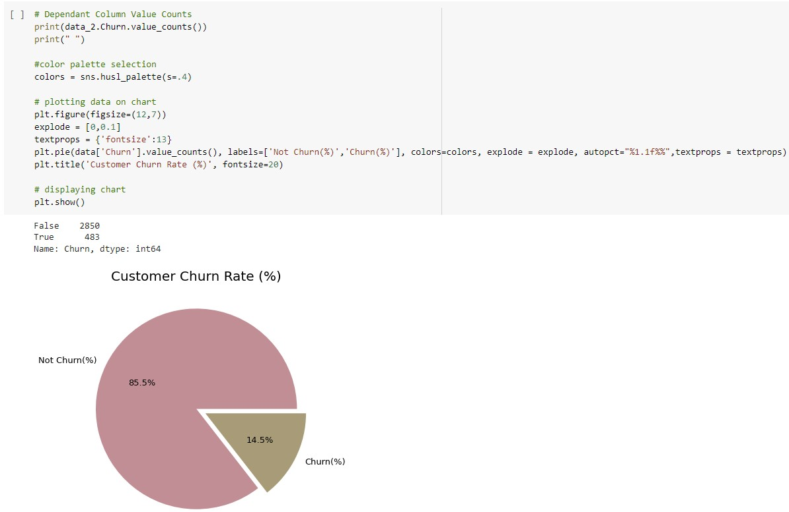

Telecom Churn Exploratory Data Analysis
Telecom churn analysis is the process of identifying customers who are likely to cancel their service or switch to a different service provider. This is an important problem for telecom companies, as churn can have a significant impact on their revenue and profitability. Orange S.A., formerly France Télécom S.A., is a French multinational telecommunications corporation. The Orange Telecom's Churn Dataset, consists of cleaned customer activity data (features), along with a churn label specifying whether a customer canceled the subscription. Explore and analyze the data to discover key factors responsible for customer churn and come up with ways/recommendations to ensure customer retention.
Read more about this project on github repository. Checkout the video presentation on youtube.